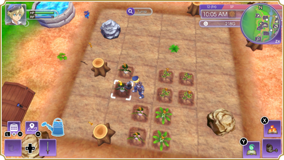
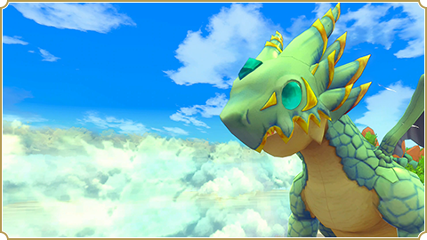

Grow crops in the field located behind Rigbarth Outpost after removing the weeds, stumps, rocks, and other objects cluttering it with your farm tools, such as the axe and hammer.

Plow the fields with your hoe and plant seeds in the newly tilled earth. After enough time passes, the seeds will grow into produce that you can harvest. Don’t forget to water your crops every day!
Familiarize yourself with these common tools.
Cast your line into a body of water, such as a river or the ocean, and press the B Button to reel in your catch when the bobber disappears beneath the surface.
As you progress through the story, you’ll encounter enormous creatures known as farm dragons. These gentle giants have large fields on their backs for you to cultivate, as well as plenty of room for monster barns that can house any monsters you’ve befriended.

Feed your farm dragons different kinds of crystals to achieve various beneficial effects, such as better soil health or bigger harvests.
Ship any produce you’ve harvested by placing it in the shipping bin next to your field. You’ll receive payment when the contents are collected every morning at 8 AM.